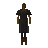
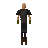
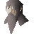

Make Over Mage (underground)
Underground area at 2919, 9703 · Kingdom of Asgarnia, Underground
Open on the world map → Open in knowledge graph → Surface: Make Over Mage
NPCs
| NPC | Level | Spawns | Notable drops |
|---|---|---|---|
 Lord Daquarius | 68 | 1 | |
 Jailer | 47 | 1 | |
| 33 | 16 | Coins, Steel bar, Iron sword, Mithril arrow | |
| 10 | 2 | Coins, Bronze pickaxe, Hammer, Bolt | |
| 1 | 4 | ||
 Velrak the explorer | 1 |